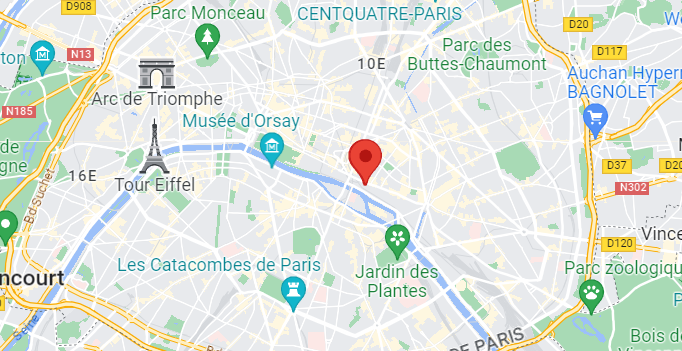

<ion-header style="background-color: #076586 ; color: white;">
    <ion-toolbar color="1A2C31" style="--ion-color-primary: #076586;">
        <!-- <ion-buttons slot="start">
            <ion-menu-button></ion-menu-button>
        </ion-buttons> -->
        <ion-buttons slot="start">
            <ion-back-button defaultHref="/"></ion-back-button>
        </ion-buttons>
        <ion-buttons slot="end">
            <ion-button (click)="onTakePicture()">
                <ion-icon name="camera"></ion-icon>
            </ion-button>
        </ion-buttons>
        <ion-title style="font-family: 'Rajdhani', 'Darumadrop One', cursive;">
            Location Details
        </ion-title>
    </ion-toolbar>
</ion-header>

<ion-content color="light" class="ion-padding" style="--ion-color-primary: #076586; --ion-background-color: #ffffff; --ion-color-light: white; --ion-color-dark: #ffffff; --ion-color-medium: #000000; font-family: 'Rajdhani'">
    <ion-list>
        <ion-item>
            <ion-label>Title: <strong>{{currentPlace?.title}}</strong></ion-label>
        </ion-item>
        <ion-item>
            <ion-label>City: <strong>{{currentPlace?.city}}</strong></ion-label>
        </ion-item>
        <ion-item>
            <ion-label>Country: <strong>{{currentPlace?.country}}</strong></ion-label>
        </ion-item>
        <ion-item>
            <ion-label>Keywords: <strong>{{currentPlace?.keyWords}}</strong></ion-label>
        </ion-item>
    </ion-list>
    <ion-card>
        <ion-card-content>
            <!--
      <agm-map [latitude]="currentPlace.coordinates.latitude" [longitude]="currentPlace.coordinates.longitude">
        <agm-marker [latitude]="currentPlace.coordinates.latitude" [longitude]="currentPlace.coordinates.longitude"></agm-marker>
      </agm-map>
      -->

            
        </ion-card-content>
    </ion-card>
    <ion-card *ngFor="let im of currentPlace?.photos">
        <ion-card-content>
            <ion-img [src]="im"></ion-img>
            <!-- <ion-img [src]="capturedImage" *ngIf="capturedImage"></ion-img> -->
        </ion-card-content>
    </ion-card>
</ion-content>
